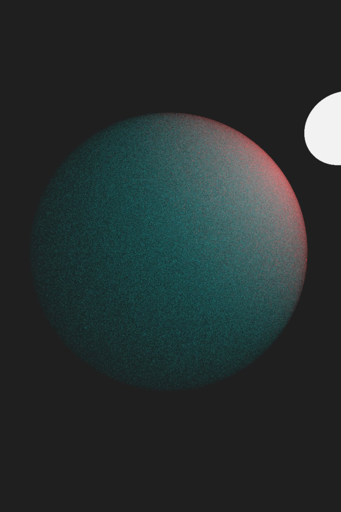
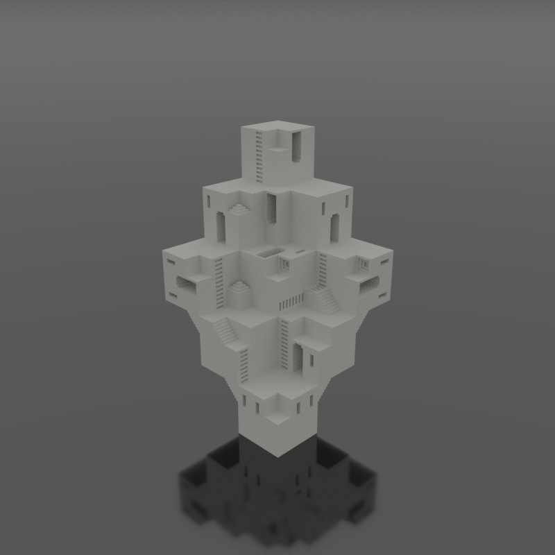
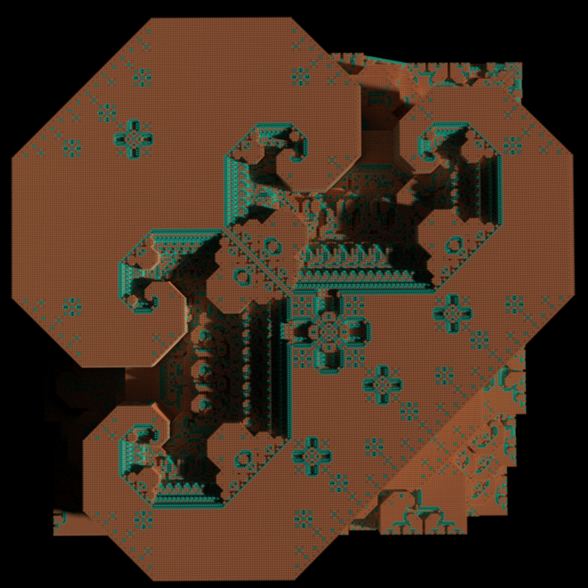
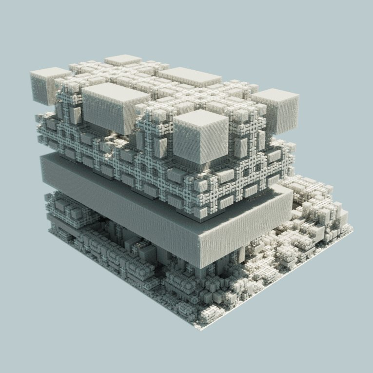
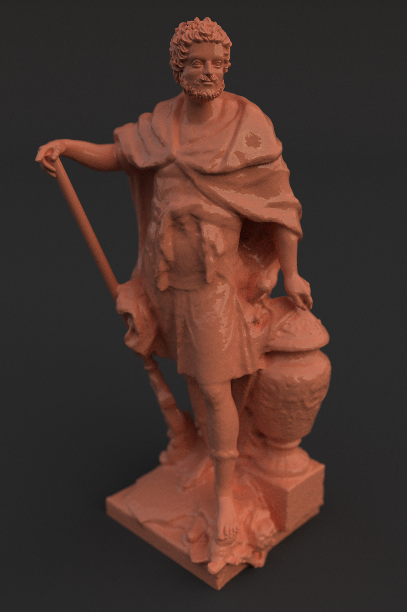

About.
I am a student at Stanford University, studying math. This site is meant to host some of the graphics projects I've been working on in my free time.
Projects.
Most of these projects are made with some mix of JavaScript, WebAssembly (C/C++), WebGPU, and WebGL. Many of them are available as interactive demos in some shape or form, and most are also hosted on my Github. Here's a list of my projects, with more information about each below.
A 1M triangle model, courtesy of the Stanford 3D Scanning Repository.
GPU BVH Construction.
Having learned a lot about how to design more efficient, parallel algorithms over the previous year, I wanted to revisit my previous attempt at wave front path tracing in WebGPU. In an effort to make the entire pipeline run as quickly as possible, I switched to constructing the BVH on the GPU. My implementation is based on this paper.
Overall, the performance increase with this method was huge. Whereas my WASM/C++ BVH construction could take 10 seconds to process a mesh with a few hundred thousand triangles, the GPU version running on my laptop handles the 1M triangle model on the left in a third of a second. In fact, it is able to construct the BVH five times faster than it can parse the .obj file.
I also found while developing this project that having as much of the pipeline as possible on the GPU kept the code more modular and organized; as I've added more features to this project, I've continued to do as much processing as possible on the GPU.
A tree growing in real time.
Tree Generator.
For this project, I wanted to branch out and work on a topic I hadn't touched in a while: procedural generation. After making a procedural tree in Blender for one of my classes, I stumbled on the Algorithmic Botany group at the University of Calgary and read through many of their papers on procedurally generating plants. Putting these ideas together, I built a procedural tree generator using WASM/C++ and WebGL2.
The demo allows users to modify different properties of the tree as it grows in real time: you can change how strongly it is affected by gravity, how energy is divided between different branches, how strongly the tree grows towards light, and many other properties. The demo gives a rough explanation of the different parameters exposed by the simulation.
While writing the majority of the procedural generation code in C++ improved the performance significantly, I still feel it runs too slowly. The largest bottle neck is computing the amount of light each leaf receives, since it must factor in how much light is blocked by each other branch and leaf; luckily, this is the most parrellelizable part of the simulation, and I hope to move this work onto the GPU in the future.

A 3D fractal path traced with a glass material.
SDF Path Tracing #2.
This was a small project I did in the few weeks before my first year of college. I wanted to practice some physically based rendering techniques I hadn't used before, including microfacet-based BRDF models, volumetric path tracing, and more interesting light sources. To be able to focus on these elements, I decided to use signed distance functions (SDFs) to model the geometry in the scene, allowing me to experiment quickly with complex geometry.

A sphere containing a homogenous scattering medium.
For me, the most interesting part of this project was the volumetric path tracing. My implementation was based on the simple volume integrator from PBRT, which allows volumes to scatter different wavelengths of light with different probabilities. While. in the image on the left, the volume itself has no "color," the scattering properties of the volume create an interesting effect. Red wavelengths of light are more likely to scatter than their blue/green counterparts; as a result, red wavelengths can't travel far, making points away from the light appear blue.
While a typical simple GPU-accelerated path tracer will perform one sample per kernel invocation, this strategy becomes impractical when rendering scattering media. In a typical scene with a handful of objects and lights, a path of light might scatter 3-5 times before reaching a light source; however, even in simple scenes like that on the left, a path of light might scatter 30-60 times before reaching a light source, which is an impractical number of rays to trace per kernel invocation. To circumvent this while keeping the overall code simple, my renderer is a mix between this simple strategy and a full-blown wavefront path tracer. Instead of each kernel invocation computing one sample per pixel, an invocation extends each active path by one step. This allows a path to be computed over multiple invocations, allowing it to scatter more and improving GPU occupancy.

A simple voxel model rendered in browser, from this repository.
Web.vox.
This was my second project using the voxel path tracer I initially developed for rendering procedural voxel fractals. It allows users to drag and drop .vox models - the storage format used by MagicaVoxel - into their browser and view them with a simple path tracer. It has limited support for different .vox features, and may not work with files which contain animations, volumes, or models which are too large.

A massive voxel fractal path traced in a handful of seconds.
Path Tracing Voxel Fractals.
This project started as an attempt to path trace large voxel scenes in real time using a mix of upscaling, temporal reuse of samples, and SVGF. While the initial results were promising, I never got the performance to a level which was acceptable for the low end devices I was targetting.
As a result, I switched away from real time rendering towards making just an interactive progressive path tracer. To accelerate rendering, I stored coarse representations of the scene at different levels, allowing me to render large scenes with excellent performance. The scene on the left is made up of more than 3B individual cubes, and was rendered within a matter of seconds on my laptop. Additionally, the acceleration structure is built on the GPU.

Another large voxel fractal.
The scenes are generated using Brent Werness' Voxel Automata Terrain ported to javascript. As this generation is done on the CPU, it may take a bit (up to 30s) for larger (i.e., 512³) scenes, but the rest of the pipeline runs extremely quickly on the GPU.
The demo allows you to move around a scene, modify aspects of the lighting such as the sun's position and intensity, and edit camera variables such as the aperture, focal distance, and tone mapping. It also gives more explanation of how various parameters effect the procedural generation.

Path traced scan of statue of Hannibal. Model courtesy Scan the World.
Wavefront Path Tracing.
This was my first attempt at building a more complex path tracer on the GPU, and my first experience with ray tracing BVHs. With WebGPU becoming more widely supported, I wanted to try making a GPU-oriented path tracer based on the paper Megakernels Considered Harmful: Wavefront Path Tracing on GPUs. Although I achieved decent performance, there were a few aspects of GPU programming I didn't understand at the time, so it definitely falls short of the performance it could have achieved.
Nonetheless, I really enjoyed working on this project. The demo allows users to upload 3D models, place them around a scene, apply different materials to them, upload HDRIs to change the environment lighting, and adjust the camera focal distance and aperture. To improve performance, the BVH is constructed in WASM (written in C++), while the remainder of the rendering pipeline runs on the GPU.
A 3D fractal path traced in WebGPU.
SDF Path Tracing #1.
Nov. 2022 - WebGPU/JavaScript - demo
This was my first large graphics project, completed in my senior year of highschool. Inspired by this article, I used WebGPU to create an editor for exploring, manipulating, and path tracing 3D fractals defined by signed distance functions (SDFs). It allows users to input their own SDFs in the form of a WGSL snippet, adjust parameters of their SDFs in real time, and modify aspects of the lighting like the sun position and time of day. To simulate the sun and atmospheric scattering, I implemented the Preetham Sky model in WebGPU as well.